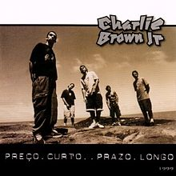
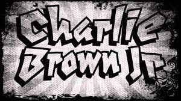

Tributo Ao Eterno Chorao
Um Pequeno tributo a esse mito do rock brasileiro que durante muito tempo alegrou a mulekada na decada de 90 e 2000
A história
Chorão fez parte da banda charlie brow jr, ele era o principal responsavel pelo sucesso da banda com seu carisma e talento ele cantava e encatava pessoas de varias idades , alem de ser como pessoa um critico nato , sempre em suas composiçoes trazia a auto critica cheia de sucesso.
Durante muitos anos chorão permaneceu com seus problemas pra si era uma pessoa alegre divertido e sempre auto astral, animava a galera em seus shows , mas por traz de tudo isso tambem havia uma história triste de vicios e de conturbação.
Casado e pai chorão como todo artista se dobrava pra concilia seu tempo entre shows, viagens ,fãs e familia , durante muito tempo conseguiu até chegar ao ponto de se envolver com drogas e tambem entra em depressão o que mas tarde se tornaria um caminho trágico e sem volta
- Vou te levar daqui
- Céu Azul
- Malandra
- Inevitavel
- By my self
- Nosso blues
- Vou te levar daqui
- Céu Azul
- Malandra
- Inevitavel
- By my self
- Nosso blues
- Vou te levar daqui
- Céu Azul
- Malandra
- Inevitavel
- By my self
- Nosso blues
DISCO O MEU MUNDO
COLETÂNIA 10 ANOS
DISCO O NOSSO BLUES